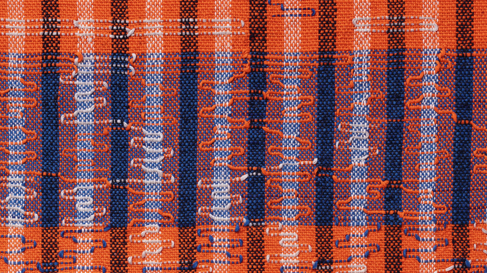
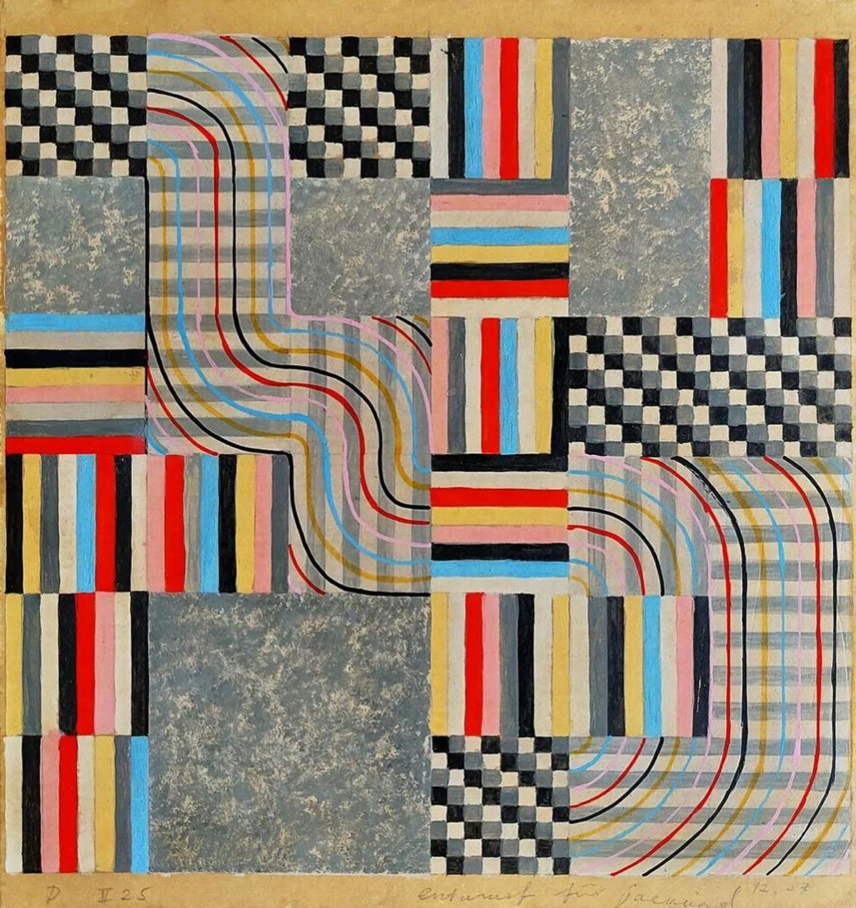
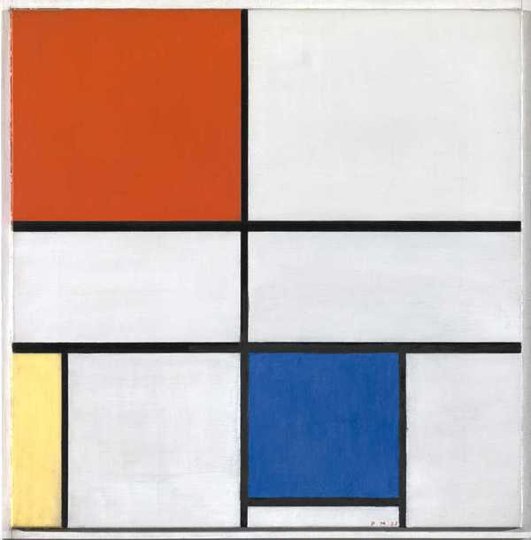
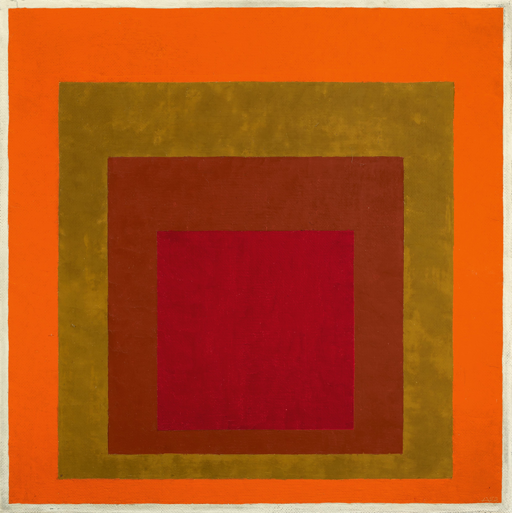

As a designer, I use grids daily—and honestly, I think they're the closest thing we have to a creative cheat code. Grids are the invisible skeletons holding everything together: the quiet background system that makes chaos look intentional and makes "just vibes" look like discipline. They're the difference between design that feels crisp and design that feels like it's slowly sliding off the page. And the best part? Once you understand grids, you learn exactly when you can break them—and breaking a grid with confidence is one of the most delicious small joys a designer can have.
Featuring artwork from Anni Albers, Piet Mondrian and Josef Albers
In my urban planning class, I've been taught that grids goes beyond the fine art world, but in fact in everyday life, here are some examples of grids you can find in a tangible environment


Nature's everyone's best teacher,